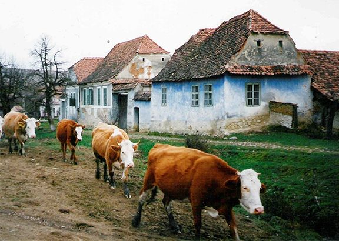
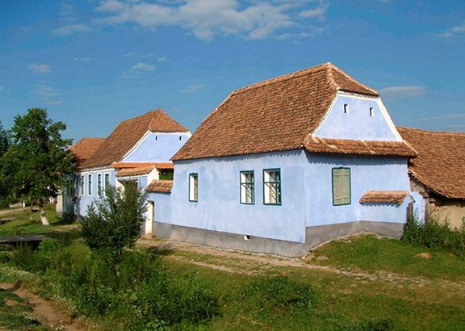
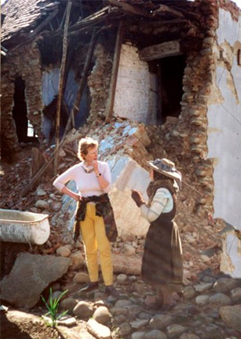

163 Viscri


No 163 Viscri was inhabited by Old Frau Fernolend, as she was known owing to her longevity, her stoop and fragile appearance. To all of us who loved her, and particularly to her close friend and distant kinswoman Caroline Fernolend, who lived opposite her and cared for into her old age, she was an extraordinary personality. The tragic events that beset Old Frau Fernolend throughout her life never overcame her friendliness. Generous, kind, and with a special charismatic way of conversation, she would tell us stories, in the beautiful dialect of Viscri, the village of her youth, of the Landbarschaft - the ancient Saxon code - and of the Saxons’ predicament during the Second World War.
Frau Fernolend’s father was Johann Markel, who was born in 1879 and died shortly before the end of the Great War in 1917, leaving fatherless his two sons, Johann and Georg, and his beloved daughter Sara, aged 6. When Sara was 21 she married Georg Fernolend. But again tragedy struck. Georg joined Hitler’s army. Wounded, and with a splinter embedded in his hand, he survived the war and returned to Viscri. But in 1949 he was taken to hospital in Tirgu Mures, where he died at the age of 41. Frau Fernolend had to sell a pig and a cow to pay for his body to be brought home. To the end of her days she blamed Hitler for her loss, as well as for the suicide of her daughter Frieda Katharina, who twenty years later threw herself down the well in their courtyard, leaving behind a one-year old daughter.
Caroline Fernolend was determined to help her friend to continue to live in her house as she grew older and more frail. This proved increasingly difficult. Old Frau Fernolend’s wider family were no longer with her to take care of the property. They had departed for Germany in the feverish post-Ceausescu exodus in 1990, when the Saxons were offered citizenship by Germany’s Foreign Minister Hans Dietrich Genscher. Over ten years of neglect, the fabric of the house deteriorated in Romania’s freezing winters and hot summers. In 2000, a huge crack suddenly appeared in the right wing. Caroline, appalled, asked the Mihai Eminescu Trust to help. Their generous backers, Dr Packard of the Humanities Institute, responded immediately and enabled the Trust to come to the rescue.
At this early stage in the Trust’s restoration career, it was essential for the morale of the villagers that there should be tangible evidence of buildings being saved. The situation of Frau Fernolend’s house was ideal. It stood at a crossroads at the entrance to the village with a bustling thoroughfare passing its doors. The project would be highly visible. Moreover, it was only the façade which was to be repaired, which would be affordable without overstraining the Trust’s finances. Jeremy Amos, a respected conservation architect in his own right, arranged for wooden shafts and planks to support the front over the winter months. Unable to speak the dialect, he nonetheless struck up a flirtatious relationship in Hoch Deutsch with his new 90-year-old friend. She sobbed her gratitude on his shoulder. But her thanks were premature. Through much of the harsh winter of 2001, heavy snow fell. In April disaster struck. The planks could not hold the weight. One awful night the house crashed in ruins around Old Frau Fernolend.

Courageous to the end, she insisted on staying in the surviving wing, even though she was now without a kitchen. Every day, Caroline and her husband Walter brought her food. The task of rebuilding took on entirely different proportions and would now be extremely expensive. But the Trust could not abandon Frau Fernolend. Heartened by the Packard and Horizon Foundation’s responses to their request, the Trustees devised a plan to combine teaching with rebuilding. Frau Fernolend’s house would become a show case for the Trust’s work. Forgotten skills would be revived. British restoration builders - masons, plasterers and carpenters - would be brought to Viscri from Shropshire, the centre of the British conservation revival.
The British workmen were inspired by their task. The Saxon villages were a microcosm of pre-industrial England – a tranquil harmony of melding landscape and houses. Soon the legendary restorer Colin Richards arrived to supervise this pioneering programme. The Viscri village builders rose to the challenge. Taught how to restore in the traditional style, with techniques that had been all but obliterated during the Communist years, teams of builders worked for three years on this difficult and intricate project. The day-to-day work was overseen by the Romanian architect Gabriel Lambescu, who would within a year be known and admired throughout the international conservation world. His special mission, having worked on prestigious sites such as the castles of Fagaras and Cris, was to maintain the integrity of all the details of Saxon workmanship, first and foremost the floors and ceilings, closely followed by the ancient outdoor kitchen, courtyard, barn and outhouses. The local builders’ pride was boundless – they had not only re-learned their fathers’ skills but had saved the oldest house in the village from being lost to posterity. Little though they knew it, their accomplishment would soon be widely quoted in European architectural journals and government circles as a model of enlightened regeneration and sustainable development.
As the work progressed, Old Frau Fernolend continued her daily work with her beloved cow, her dog and her hens, firmly believing she would outlive everyone. In gratitude, she left the house, all her clothes, her furniture and private photographs to Caroline, who in turn donated the house to the Trust.
In 2011 this very special house was sold to HRH The Prince of Wales, to provide funds for the Trust to restore more buildings. A walk up the main Street of Viscri reveals just how many historic houses in this village alone have benefited from the Trust’s work.